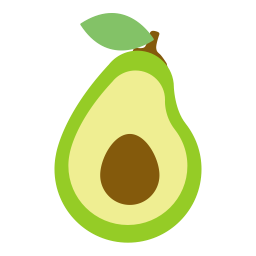

Après le triste de palmarès de l’EWG (Environmental Working Group) des fruits et légumes contenant le plus de pesticides, nous vous proposons maintenant le classement des fruits et légumes les moins contaminés. Leur capacité de résistance permet de moins les asperger de pesticides, et il s’avère donc moins indispensable pour ces fruits et légumes de les choisir bio.
1 - Le maïs doux fait partie du top des fruits et légumes contenant le moins de pesticides. Privilégiez les épis de maïs plutôt que les conserves, pour éviter l'exposition à l'aluminium et les additifs rajoutés dans les conserves. |
|
|  | 2 - L'avocat est riche en bons acides gras et aide à la régulation du mauvais cholestérol. Il est aussi riche en fibres et en antioxydants. |
3 - L'ananas contient de la broméline, une substance active ayant un effet bénéfique sur la circulation sanguine et les maladies cardiovasculaires. |
|
4 - Le chou est un légume de la famille des crucifères, dont la teneur en glucosinolates aide à prévenir certains cancers (poumon, estomac, sein, prostates...). Il est aussi riche en vitamine K et en vitamine C. |
|
5 - L'oignon est très riche en antioxydants, notamment en quercétine, et aide à prévenir les risques de cancer et de maladies cardiovasculaires. |
|
6 - Les petits pois sont une très bonne source de protéines végétales. Ils présentent aussi des taux élevés de provitamines A et vitamine K. |
|
 | 7 - L'asperge est source de minéraux (magnésium, potassium, fer, calcium). Elle est aussi pauvre en sodium, ce qui en fait un aliment diurétique qui stimule l'activité des reins. |
8 - La mangue est une bonne source de fibres et de vitamines C. Elle possède aussi des caroténoïdes, aux propriétés antioxydantes, qui lui confèrent sa belle couleur. |
|
9 - L'aubergine contient une grande quantité d'antioxydants, en particulier dans sa peau. Evitez donc de l'éplucher et lavez-la bien avant de la consommer. |
|
10 - Le kiwi est le champion de la vitamine C : 2 kiwis couvrent 100 % des besoins quotidiens en vitamine C chez l'adulte. |

Bonjour, la moitié des produits listés ici viennent de l’autre bout de la planète. Je sais que l’écologie n’est pas votre but premier, mais vu que la majorité des lecteurs de cet article (en français) vivent en métropole, vous auriez pu préciser d’éviter de consommer ces produits.
De plus, je rappelle à ceux qui lisent ce commentaire qu’il existe en France des réglementations, en particulier sur les produits bios, qui font que les quantités de pesticides sur les produits mis sur le marché sont sans danger pour le consommateur (contrairement à l’agriculteur d’ailleurs qui est exposé en quantités infiniment plus grandes), peu importe le produit mis en vente. Ainsi, je m’interroge sur l’utilité d’un tel article, il aurait été préférable de faire un classement sur les vitamines contenues dans les fruits et légumes par exemple.
Enfin, comme je vois plusieurs commentaires parlant d’OGM, je vous rappelle que ceux ci sont extrêmement réglementés en France, et que ceux qui sont sur le marché n’ont aucune raison d’être dangereux, et n’ont de toutes façons jamais montré de signe de dangerosité, excepté dans des études aux protocoles extrêment douteux comme celles de Séralini qui ont rapidement été invalidées par la communauté scientifique et les nombreuses autres études mises en place.
un véritable scandal de laisser impunément au nom de largent , une entreprise assassiner légalement ses semblables. Quand ils n’auront que des cadavres à nourir, ils mangeront leurs billets de banque à la sauce caribouille.
Bonjour
je suis vraiment tres contente de blomy
Je suis étonnée par la sélection de l’ananas car je viens de lire un article sur la culture de ce fruit qui se fait dans un pays qui utilise des pesticides tellement puissant quet les gens sont malades. Ce pesticide est interdit en france et dans bcp de pays mais la sncf l’a utilisé pour nettoyer les voies de chemin de fer. Il faut préciser l’ananas bio et se renseigner si il est vraiment bio. MerCi.
tout ceci est bien beau mais se nourrir correctement devient comme se soigner, soit médecine à deux vitesses et maintenant alimentation à deux vitesses; comment les moins favorisés, les retraités devant compter feront ils pour se nourrir « bio » ?
Bonjour Julie, je suis enceinte et j’ai l’anémie qu’est ce que vous conseillez comme fruits et légumes ?
Le mais le moins contamine ?
Il semblerait qu’il n’y ait meme plus de mais non transgenique.
Monia, Montreal
Bonjour Blomy,
N’oublions pas que la production de Maïs est composé de majoritairement d’OGM qui sont eux très demandeurs malgré les rumeurs de produits « Phytho ».
Aussi, n’oublions pas qu’un aliment qui a fait le tour de la terre est aussi « un poison »,
Je sais qu’il est extrêmement difficile de se nourrir en cohérence. Mais avec un peu d’entrainement, vous ne mettrez plus le pied dans une grande surface classique!
Manger c’est fun, surtout quant vous mettez les mains dans la terre!!!
Cultiver Bio, c’est bon pour tout le monde! la Terre, les micro-organismes, le végétal, l’animal et NOUS les Zumains! Zéro-OGM Tolérance!!!
Beaucoup d’idées reçus. Le maïs à peu de prédateur et maladie contrairement à beaucoup d’autres plantes, légumes ou autres; donc peu d’intervention. Les OGM, en France c’est interdit.
Alors arrêtons de dire n’importe quoi. Faîtes confiance à vos producteurs locaux.
Thank U !
Pas d’accord avec Eric. Les bananiers sont traités avec des pesticides qui posent problème. S’il y a un fruit que j’achète bio c’est bien la banane. Allez vois sur internet..
Parfait cet article !
Il nous permet de faire un choix rapide de ce qui est bon.
C’est parfait, tout est dans mon panier !
Signataire du précédent message
Merci, c’est très utile !
Ah ben du coup, je dois réagir ici aussi.
Pas d’accord pour le choux qui fait partie des légumes ayant le plus de pesticides, tout comme les salades, en bref, les grandes feuilles à même de capter plus de pesticides lors d’arrosages.
Peut être une exception pour les choux ermés où il suffit d’enlever les premières feuilleset de les jeter.
A l’inverse, vous oubliez la banane, qui, avec sa peau épaisse, fait partie des fruits et légumes contenant le moins de pesticides.
Il semble même, d’après des études sérieuses, que la banane devrait avoir la première place.
Vous ne la citez pas.
Merci!!! 😊
Merci julie pour toutes ses infos
Joss
Très intéressant, vous devez persévérer et approfondire.
J’apprécie votre application et la conseil autour de moi
Comme le disjr48 le bio n’est pas à la portée de toutes les bourses, mais travailler un jardin potager privé ou communal(jardins familiaux )est aussi une garantie de propreté
C’est dur , de la sueur d’accord, il fait parfois se donner les moyens et le faire en direct sans pollution chimiques
Bye
Bonjour,
Je trouve que tout ce que vous faites est très intéressant et mérite d’être encourage et développé, par contre au risque de vous paraître très tatillon, vous faites une description des qualités intreseques des produits, alors que la présence de pesticides dépend avant tout des méthodes culturales utilisées. D’où le risque d’avoir des produits avec les super qualités que vous décrivez, mais ayant subi des traitements phytosanitaires si ceux ci ne proviennent pas au moins de productions biologiques. N’oublions pas que si le biologie c’est très bien ce n’est pas à la portée de toutes les bourses.
Hé bien si, les qualités intrinsèques de la résilience aux maladies des produits est très importante quand à la présence de pesticides. Car les producteurs nationaux ne traitent pas par plaisir (si pas de problème : pas d’intervention) A contrario pour les produis à problèmes, vous observerez que leur provenances sont plutôt en majorité très éloignées; et alors quel crédits accorder à la traçabilité ? Privilégiés les circuits courts et vous garderez un œil avisé sur ce que vous mangez!!! La culture biologique : c’est très pointu et coûteux et le différentiel de prix est très tentant pour les gens peu scrupuleux.
Merci pour ces infos .. très important
Et ben, on va pouvoir faire des « oignons parties » vite, Julie, des recettes😉
Je fais découvrir Blomy à tous mes amis, notamment les grands ados. Ceux-ci sont les plus intéressés. A ++
le bilan carbone est pas terrible…
Merci de nous aider à y voir plus clair et nous permettre de manger plus sainement.
Sylvette
Merci pour ces listes. Une suggestion cependant. J’ai fait un copier coller et un peu de mise en page pour pouvoir faire tenir ça sur une page et l’afficher sur mon frigo. Il serait pas mal d’avoir ces fiches conseils imprimables tel quel. (Oui je sais c’est pas écolo d’imprimer…)
👌 grand merci pour votre implication. Toutes vos informations sont les bienvenues et encore plus les positives !!
Pour l avocat, il faut malheureusement beaucoup d’eau, donc attention au pays de la provenance.
Bonjour Christian et merci beaucoup
Très intéressant, avez vous plus d’information sur les lieux de provenance à privilégier ?
J’en consomme tous les matins alors autant ne pas faire trop de dégâts.
Merci à l’équipe UKA
Merci de ces conseils que nous nous efforçons de suivre…
Merci aussi pour cette très utile application.
Désolée mais le fait d’acheter local ne garanti en aucune façon que le producteur n’a pas utilisé de pesticides.
C’est le cas de la production dite « raisonnée » cela reste très subjectif et chaque producteur peut avoir une vision très personnelle de ce qu’il estime raisonné.
Certains produits comme ceux cités ont besoin de peu de traitements.
Il est exact que pour les hypermarchés les produits sont
cueilli avant maturité mais si l’on parle de F&L sans traitements alors seuls les Bio sont garantis (le journal télévisé a réalisé un reportage sur le sujet , des legumes bio prélevés en Espagne – vendus en hyper’- et analysés hors du pays présentaient zéro pesticides)
Vive « la » Bio (pas Le bio), Nature et Progrès et la biodynamie
Le Maïs à choisir sans OGM et les autres fruits et légumes à choisir localement quand c’est possible ! 🙂
Tout a fait ! Attention ! Les fruits et légumes vendus en grande surface sont a éviter ! Si possible acheter locale.
Pas sur ! Quant à acheter des mangues en Auvergne…..!
Biocoop sont les seuls (a priori) à proposer une mangue bio/équitable et voyage en bateau
Arrêtons de « psychoter » sur les OGM. Depuis que l’Homme à découvert l’agriculture il n’a eu de cesse que de modifier le capital génétique des céréales, par exemple.
On ne parle pas de la même chose,
A chaque instant les gènes sont en mutations de manière naturel, par cause à effet. C’est un processus que l’on ne contrôle pas.
Par contre, que des industriels sous le couverts de la science modifie le génomes dans le seul but étant d’avoir main mise sur des brevets (donc sur le vivant) et faire des expériences hasardeuses exemple: mettre « modifier le code gènetique de la fraise avec un élément de poisson » pour la rendre résistante à certaines maladies.
Bref,
Mis a part la main mise sur le vivant des industriels tel que « monsanto-Bayer » « BASF » « Syngerta » « dupont » et d’utilisations massives de produits tel que le round-up (agriculteurs ne pouvant plus garder les graines d’une année à l’autre)
Il est grand temps que l’agriculture fasse ça grande révolution pour une agro-écologie avec une vision globale pour la santé de tous.
La transition est déjà en marche chez beaucoup de jeunes paysans soutenu par terre de lien, distribuer dans des circuits courts tel que les AMAP et dans le réseau militant tel que Biocoop.
Je ne parle pas de mutations naturelles mais des croisements effectués par nos ancêtres pour améliorer les rendements
Merci comme toujours cela nous aide à faire attention à notre santé
Bravo!!!!!!
Merci pour ces infos qui vont nous permettre de mettre au point la liste de courses pour de bons plats et de bons jus à l’extracteur !
Merci Julie c’est agréable de savoir qu’il y a encore quelques fruits et légumes que l’on peut manger sans réticence. A bientôt. Josy
Merci beaucoup pour tous j adore cette application elle m aide beaucoup !!
<3
Je tenais à vous remercier de vos conseils très utiles lors des achats de fruits et
Légumes